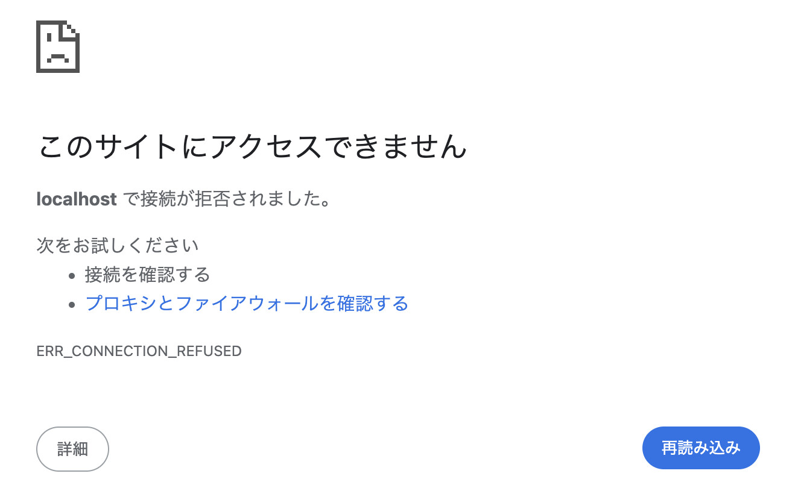
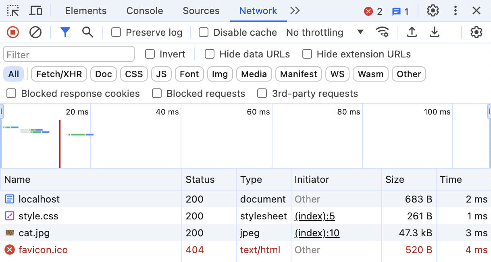
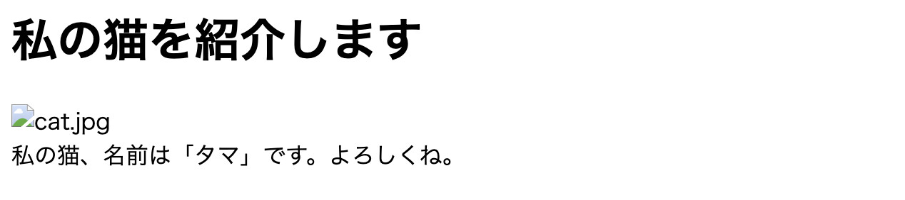
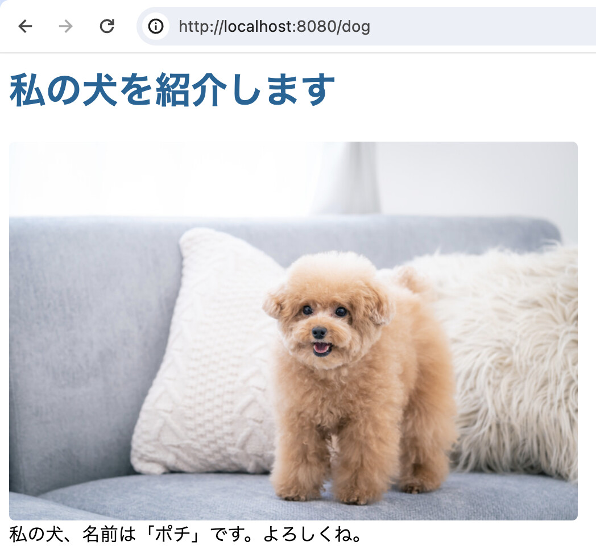

7. 簡易ウェブサーバの実装#
本項では、前回のソケット通信で学んだことを応用し、簡易ウェブサーバを実装してみよう。
特定のURLの特定のポートにおいて接続を待ち受けるだけの簡単なプログラムをマルチスレッドでリクエストを処理するウェブサーバに改良していく。
最終的に作成される簡易ウェブサーバでは以下の演習用データを配信することを目指す。
7.1. 最初のプログラム#
まずは、ソケットを用いてlocalhostの8080ポートで接続を待ち受けるプログラムを作成しよう。以下のソースコードにserver.pyという名前をつけて、各自のコンピュータに保存しよう。
import socket
# サーバのパラメータ
SERVER_HOST = "localhost"
SERVER_PORT = 8080
SERVER_NAME = "Awesome HTTP Server/v1.0.0"
SERVER_ROOT = "public_html"
BUFSIZE = 4096
def main():
# ソケットを作成
srv_sock = socket.socket(socket.AF_INET, socket.SOCK_STREAM)
srv_sock.setsockopt(socket.SOL_SOCKET, socket.SO_REUSEADDR, 1)
srv_sock.settimeout(1)
srv_sock.bind((SERVER_HOST, SERVER_PORT))
srv_sock.listen(10)
print(f"Listening on {SERVER_HOST}:{SERVER_PORT}...")
while True:
try:
# クライアントからの接続を待ち受ける
clt_sock, clt_addr = srv_sock.accept()
print(f"Connection from {clt_addr}")
# データを受信して表示
req_bytes = clt_sock.recv(4096)
request = req_bytes.decode("utf-8")
print(f"Received:\r\n{request}")
if request == "exit":
break
except socket.timeout:
# 接続がタイムアウトしたら、再度接続を待ち受ける
continue
except KeyboardInterrupt:
# Ctrl+Cなどが押されたらループを抜ける
break
# ソケットを閉じる
srv_sock.close()
if __name__ == "__main__":
main()
保存が完了したらターミナル等のシェルを開き、
python server.py
として実行する。すると、localhostの8080番ポートが読み取られるようになるので、ブラウザのURLに http://localhost:8080 と入力してサーバーにアクセスしてみよう。
おそらく、以下のような「このサイトにはアクセスできません」のようなエラーメッセージが表示されてアクセスに失敗するはずだ。
{kind=link}
しかし、裏側ではブラウザからHTTPリクエストが送信されていて、サーバ側のプログラムでは、送られてきたリクエスト内容がシェル上に表示されているはずである。ブラウザの種類によって多少内容はことなるが、概ね以下のような内容のリクエストが表示されているはずである。
GET / HTTP/1.1
Host: localhost:8080
Connection: keep-alive
Cache-Control: max-age=0
sec-ch-ua: "Brave";v="125", "Chromium";v="125", "Not.A/Brand";v="24"
sec-ch-ua-mobile: ?0
sec-ch-ua-platform: "Windows"
Upgrade-Insecure-Requests: 1
User-Agent: Mozilla/5.0 (Windows NT 10.0; Win64; x64) AppleWebKit/537.36 (KHTML, like Gecko) Chrome/125.0.0.0 Safari/537.36
Accept: text/html,application/xhtml+xml,application/xml;q=0.9,image/avif,image/webp,image/apng,*/*;q=0.8
Sec-GPC: 1
Sec-Fetch-Site: none
Sec-Fetch-Mode: navigate
Sec-Fetch-User: ?1
Sec-Fetch-Dest: document
Accept-Encoding: gzip, deflate, br, zstd
Accept-Language: ja,en;q=0.9,en-US;q=0.8
世間で広く使われているようなウェブサーバでは、このHTTPリクエストの内容を一つずつチェックして、どのような内容をクライアント側に送り返すかを決めている。しかし、簡易ウェブサーバで全てを扱うのは困難なので、これらのリクエスト・パラメータのいくつかだけに対応することにする。
警告
今回作成するウェブサーバはHTTPSには対応していないので、ブラウザでウェブページを開くときには http:// から始まるURLを使うこと。
7.2. HTTPレスポンスの内容#
「最初のプログラム」では、ブラウザでアクセスした際に、エラーが発生してアクセスに失敗してしまった。これは、端的にはHTTPレスポンスが返ってこなかったことに原因があるのだが、そもそも、通常のウェブサーバはどのようなレスポンスを返してくるのだろうか。
Pythonには標準ライブラリの中に簡易ウェブサーバが用意されているので、それを用いてレスポンス情報を調べてみよう。サーバは以下のコマンドで起動できる。
# [配信するディレクトリ]の部分は適宜変更すること
python -m http.server [配信するディレクトリ] 8081
サーバを起動後、ブラウザを開いて、 localhost:8081 にアクセスしてみよう。すると、以下のようなウェブページが正しく表示されるはずである。
{kind=link}
ブラウザでページを表示したら、Google Chromeであれば、右上の三点メニューから「その他のツール」→「ディベロッパーツール」を開く。ツールの画面が開いたら、ページをリロードすると、「Network」のタブに以下のような情報が表示される。
{kind=link}
上記の画像で画面下側に表示されているいくつかのドメイン、ファイル名のうち localhostを選択すると詳細を見ることができる。なお、このlocalhostというURLは、以下のTipに示すとおり、index.htmlに対応している。
{kind=link}
Tip
一般的なサーバは、ファイル名を指定しない場合には、そのディレクトリにおけるデフォルトファイル (多くの場合は index.html)を参照することになっており、localhost:8081は、実は localhost:8081/index.htmlをURLとして指定していることと同義になる。
上記の画面で、Response Headersの右横にあるチェックボックスをクリックすると、レスポンス・ヘッダの情報を取り出すことができる。
HTTP/1.0 200 OK
Server: SimpleHTTP/0.6 Python/3.11.9
Date: Wed, 12 Jun 2024 00:23:34 GMT
Content-type: text/html
Content-Length: 497
Last-Modified: Tue, 11 Jun 2024 23:59:41 GMT
以上のように、レスポンスヘッダにはHTTPのバージョンの他、ファイルが配信された時刻やファイルの種類、データ長などが含まれている。
7.2.1. レスポンスを真似る#
HTTPサーバから戻されるレスポンスは、上記のレスポンス・ヘッダとレスポンス・ボディを含む。レスポンス・ボディは、上記の例で言えばindex.htmlのファイルの中身で、ヘッダとボディは空行で区切られる。
では、レスポンスとして、上記のレスポンス・ヘッダと適当なHTMLファイルをつなげた以下のテキストをそのまま戻すようにしてみよう。なお、レスポンス・ヘッダはバイナリデータとして送信しなければならないので、以下のテキストをUTF-8でエンコードし、クラアントのソケットを用いて送信する。
# responseは以下に示すテキストの内容
clt_sock.send(response.encode("utf-8"))
HTTP/1.0 200 OK
Server: SimpleHTTP/0.6 Python/3.11.9
Date: Wed, 12 Jun 2024 00:23:34 GMT
Content-type: text/html
Content-Length: 497
Last-Modified: Tue, 11 Jun 2024 23:59:41 GMT
<html>
<head>
<meta charset="utf-8" />
<title>テスト</title>
</head>
<body>
<h1>テスト</h1>
</body>
</html>
上手くレスポンスが送信できれば、ブラウザに以下のように表示される。
{kind=link}
7.3. レスポンスの動的な生成#
ここまでの例はPythonに元々用意されているhttp.serverのレスポンス・ヘッダをそのまま利用していた。しかし、通常のウェブサーバは、これらの情報をサーバ自身が生成していることは言うまでもない。
そこで、必要なレスポンス・ヘッダの情報を、計算機的に生成してみよう。なお、レスポンス・ヘッダやそれに続く空行はCRLF改行と呼ばれる改行文字 (\r\n)を用いるので注意すること。
7.3.1. ステータスコード#
レスポンス・ヘッダは必ずステータスコードから始まる。今回は、レスポンスの返送が必ず成功するとして、ステータスコード200を返送する。
response = "HTTP/1.0 200 OK\r\n"
7.3.2. サーバの名前#
サーバの名前は、適当につけて良いので、自分の好きな名前を用いておこう。サーバ名は日本語で指定すると文字化けしてしまうので、英数字で指定しておくと良い。
server_name = "Awesome HTTP Server/v1.0.0"
response += f"Server: {server_name:s}\r\n"
7.3.3. 時刻の生成#
現在時刻に関する情報はdatetimeモジュールを用いて取得することができる。特に、現在時刻はdatetimeの静的関数であるnow()を用いれば良い。
from datetime import datetime
now = datetime.now()
しかし、このままでは、どこの標準時で時刻が取得されているかが判然としないので、日本標準時で時刻を取得してみよう。タイムゾーンを指定するにはzoneinfoモジュールのZoneInfoを用いる。
from zoneinfo import ZoneInfo
now = datetime.now(ZoneInfo("Asia/Tokyo"))
これを、 Wed, 12 Jun 2024 00:23:34 GMTというようなフォーマットに合わせるには、strftime関数を用いれば良い。
now_str = now.strftime("%a, %d %b %Y %H:%M:%S JST")
これで日本標準時が取得できたので、この情報をレスポンスに加えておく。
response += f"Date: {now_str:s}\r\n"
7.3.4. ファイルの情報#
前述のレスポンス・ヘッダには送信するファイルの情報として、
ファイルの種類 (
Content-type)ファイルのバイト数 (
Content-Length)ファイルの最終更新日時 (
Last-Modified)
が含まれている。これらを順に取得していこう。
まず、ファイルの種類だが、これは、ファイルの拡張子から判断すれば良い。例えば、拡張子が.htmや.htmlであればHTML (text/html)、.cssであればCSSファイル(text/css)といった具合になる。
ファイルの拡張子はファイルのパスを.で区切って取得するか、あるいはos.pathモジュールのos.path.splitextを用いても良い。
# 拡張子の取得
_, extension = os.path.splitext(path)
# ファイルの種類を判別
content_type = "text/plain"
if extension == ".html":
content_type = "text/html"
elif extension == ".css":
content_type = "text/css"
elif extension == ".jpg" or extension == ".jpeg":
content_type = "image/jpeg"
elif extension == ".png":
content_type = "image/png"
else:
raise Exception(f"Unknown file type with extension: {extension:s}")
# レスポンスに情報を追加
response += f"Content-Type: {content_type:s}\r\n"
続いて、ファイルのサイズだが、これは、ファイルを実際に開いて、バイト数をカウントすれば良い。
# ファイルの内容を読み取る
file_data = ""
with open(path, "rb") as fp:
file_data = fp.read()
# ファイルサイズを取得
file_size = len(data)
HTTPレスポンスでは、実際にファイルの内容をレスポンス・ボディとして用いるので、ファイルの内容を先読みしておくこと自体は問題はない。しかし、(本項では扱わないが)ファイルサイズが巨大な場合には、データを分割して送信することもあるので、最初からファイルの内容を読むのではなく、ファイルのサイズだけを先に調べる方が良い。
このためには、ファイルを開いた後、読み取り位置を移動させるseek関数にファイルの終端位置を表す os.SEEK_ENDを与えて、読み取り位置をファイルの末尾に移動し、その位置をバイト数として返してくるtell関数を用いるという方法が考えられる。
import os
# ファイルサイズの取得
file_size = 0
with open(path, "rb") as f:
# 読み取り位置を終端に移動
f.seek(0, os.SEEK_END)
# 読み取り位置 = ファイルサイズ、を取得する
file_size = f.tell()
# レスポンス・ヘッダの更新
response += f"Content-Length: {file_size:d}\r\n"
最後にファイルの最終更新日時だが、これはオペレーティング・システム上に記録されている情報を用いる。情報の取得には os.pathモジュールのgetmtime関数が使える (mtimeのmはModifiedのmである)。
getmtime関数は更新時刻を浮動小数で表されるタイムスタンプとして返してくるので、これをTue, 11 Jun 2024 23:59:41 GMTのような形式に変換するには、レスポンスの返送時刻を計算したときと同様にdatetimeのstrftimeを用いる。
ただし、getmtimeで得られるファイルの更新時刻はUTC (Universal Time Coordinated, 協定世界時)で表されているので、datetimeオブジェクトのastimezone関数にタイムゾーン情報を指定して、時刻を日本標準時に変更しておく。
# タイムスタンプの取得
ts = os.path.getmtime("./server/public_html/index.html")
# datetimeオブジェクトのインスタンス化
dt = datetime.fromtimestamp(ts, ZoneInfo("Asia/Tokyo"))
# テキストに変更してレスポンスに加える
dt_str = dt.strftime("%a, %d %b %Y %H:%M:%S JST")
response += f"Last-Modified: {dt_str}\r\n"
7.3.5. レスポンス・ボディ#
レスポンス・ボディは実際に送信するファイルのバイナリ情報である。バイナリ情報は実際にファイルをバイナリ読み取りモードmode="rb"で開き、read関数で全てのデータを取り出すことで得ることができる。
ここで注意したいのが、これまでに計算してきたレスポンス・ヘッダはテキスト情報である一方で、レスポンス・ボディを含むHTTPレスポンスはバイナリ情報である、という点である。
そこで、レスポンス・ボディをresponseに追加する前に情報をエンコードしてバイナリ化した後に、レスポンス・ボディのバイナリ情報を付加すれば良い。
# ヘッダとボディを区切る空行を追加
response += "\r\n"
# レスポンス・ヘッダをバイナリ化
response = response.encode("utf-8")
# ボディ情報を付加
with open(path, mode="rb") as fp:
response += fp.read()
ここまでのレスポンス・ヘッダとレスポンス・ボディの計算が正しく行えると、以下のようにウェブページ (の一部)が表示されるはずである。
{kind=link}
現時点では表示は不完全ではるもののレスポンス自体は正しく送信できていて、ディベロッパーツールでlocalhostへのアクセスに対して戻ってきたレスポンスヘッダは、以下のようにプログラムで計算したものと一致している。
{kind=link}
7.4. リンクされたファイルへの対応#
ウェブブラウザはindex.htmlをレスポンスとして受け取ると、そのファイルを表示するのに必要な別ファイルに対して自動的にHTTPリクエストを送信するようになっている。
実際、先ほどのディベロッパーツールの画面でstyle.cssやcat.jpgなどの別ファイルに対してもHTTPリクエストが送られていることが確認できる。現在、これらのファイルに対して、送り返されているHTTPレスポンスを確認してみよう。
当然ながら、現在のサーバは常にindex.htmlを読み取ってその内容を戻すので、レスポンスの内容がリクエストされているファイル内容に沿ったものにはなっていない。これが画像が正しく表示されなかったり、CSSが正しく反映されていなかったりする理由である。
そこで、ここまでのサーバをリクエストされているファイルに合わせてレスポンスを変更するように更新しよう。
7.4.1. リクエスト・ファイルの取得#
冒頭に示したHTTPリクエストの一行目には
GET / HTTP/1.1
という情報が記載されており、HTTPメソッド、ファイルのパス、HTTPのバージョンの3つの情報がスペースで区切られて記載されている。この情報を正規表現を用いて解析し、文法のチェックと情報の取得を行う。
import re
# リクエストを行に分割
lines = re.split("[\r\n]{1,2}", request)
# リクエスト情報の解析
pattern = re.compile("(GET|POST)\s+(\S+?)\s+HTTP/([0-9\.]+)")
matches = pattern.match(lines[0])
# サブグループの取得
http_method = matches.group(1)
file_path = matches.group(2)
http_version = matches.group(3)
if file_path == "/":
file_path = "/index.html"
リクエストされているファイルについては/というディレクトリに対するアクセスである場合には/index.htmlに変換していることに注意してほしい。
なお本項では、HTTPメソッドは常にGETであり、HTTPのバージョンはいくつであってもレスポンスはHTTP/1.0のルールに従ってデータを返送することとする。
HTTPのバージョン
HTTPが最初にドキュメント化された時のバージョンであるHTTP/0.9はURLに対してアクセスがあった場合に、ファイルの内容を返送するという単純なプロトコルであったが、HTTP/1.0でHTTPメソッドやステータスコードなどの、ここまでに実装してきた簡易サーバでも一部サポートしたような多くの機能が追加された。さらにHTTP/1.1ではTLS (Transport Layer Security)などがサポートされた。現在の最新のバージョンはHTTP/3であり、UDPを利用して通信の高速化を図りながら、TCPと同様の接続の信頼性を担保するQUICなどの新しいプロトコルがサポートされている。
ちなみに、HTTP/1.0であれば、その仕様書もそれほど長くなく、時間を掛ければ読み切れる程度なので、興味のある読者はぜひ原文を見てみてほしい。 https://www.w3.org/Protocols/HTTP/1.0/spec
7.4.2. エラーコードの返送#
上記のリクエストファイルを適切に読み取る処理を追加すると、ブラウザによっては正しくウェブページが表示される。しかし、favicon.ico (ブラウザのタイトル横に表示されるアイコン)などのファイルに対して、勝手にリクエストが送られてしまうと、これまでに実装したサーバはファイルの読み取り例外が発生してダウンしてしまう。
この問題を解決するために、ファイルが存在しないなどの理由でファイルの読み取りに失敗した場合に、404などのステータスコードを返送する必要がある。
これまでのプログラムでは、ファイルを実際に開いてファイルサイズを取得しているので、この部分でファイルの開閉に失敗したり、別のエラーが発生した場合に404等のステータスコードを返すように変更する。
try:
with open(file_path, "rb") as f:
f.seek(0, os.SEEK_END)
file_size = f.tell()
except FileNotFoundError:
response = f"HTTP/1.0 404 File not found\r\n"
clt_sock.send(response.encode("utf-8"))
continue
except PermissionError:
response = f"HTTP/1.0 403 Forbidden\r\n"
clt_sock.send(response.encode("utf-8"))
continue
上記のコードでは、ファイルが見つからない場合 (FileNotFoundError)や、ファイルのパーミッションの問題でファイルのアクセスに失敗した場合 (PermissionError)に、レスポンス・ヘッダにステータスコードを入れて、その場で返送している。
ここまで実装すれば、以下のように正しく画像が表示され、CSSのデザイン要素が反映されたようなウェブページが表示される。
ただし、上記のプログラムでは、ディベロッパツールでファイルを見たときにステータスコードとして404が正しく表示されない。これは、ステータスコードとして200でない場合にも何らかのコンテンツ (例えばエラーページ)を表示することが期待されているためで、実際にはエラーであっても、もう少し丁寧にレスポンス・ヘッダを記述する必要がある。
以下、決してクリーンなコードではないが、エラーメッセージをテキストファイルとしてレスポンス・ボディに与えている。
except FileNotFoundError:
err_msg = "404 File not found"
response = "HTTP/1.0 404 File not found\r\n"
response += f"Date: {date}\r\n"
response += f"Server: {SERVER_NAME:s}\r\n"
response += f"Content-Length: {len(err_msg):d}\r\n"
response += "Content-Type: text/plain\r\n"
response += "Connection: close\r\n"
response += "\r\n"
response += err_msg
clt_sock.send(response.encode("utf-8"))
continue
このようにしてエラー発生時にもレスポンス・ボディを含むHTTPレスポンスを返すようにすると、Chrome等のディベロッパツール上で、favicon.icoなどのサーバ上に存在しないファイルがステータスコード404で表示されるようになる。
{kind=link}
マルチスレッド化
通常のウェブサーバはHTTPリクエストを受信したら、クライアントのソケットを生成後、レスポンス生成の処理を並行計算(並列計算とは微妙に意味合いが異なる)により処理する。これにより、ウェブサーバに多数のHTTPリクエストが来たとしても、それを一つずつ処理のではなく、多数のリクエストを同時に処理することが可能となっている。
今回作成したサーバにおいて並行処理を有効化するには、clt_sockとclt_addrが生成されたあとの処理をhandle_clientのような関数として別に定義し、
thread = Thread(target=handle_client, args=(clt_sock, clt_addr), daemon=True)
thread.start()
のようにして、レスポンス処理を別スレッドで開始すれば良い。
7.5. ウェブ・アプリケーション#
ここまでは、index.htmlやstyle.cssのように、サーバルートであるpublic_htmlに実在するファイルをレスポンス・ボディとして返送する「普通のウェブサーバ」を実装してきた。
しかし、ここまでのプログラムから分かる通り、サーバから配信されるレスポンスはレスポンス・ヘッダとレスポンス・ボディの情報が対応してさえいれば、必ずしも実在するファイル(= HDD等に保存されているファイル)の内容を返す必要はない。
実際、世の中でウェブ・アプリケーションと呼ばれるものは、必ずしも実在するHTMLファイルを返送しているわけではなく、HTMLファイル自体をリクエストに応じて動的に生成したり、アプリケーション・プログラミング・インターフェース (API)のように、特定のURIにプログラムの機能を割り当てたりしている。
一例として、
localhost:8080/catにアクセスしたら猫の画像localhost:8080/dogにアクセスしたら犬の画像localhost:8080/randomにアクセスしたらランダムに猫か犬の画像
といったようにURIによって表示するウェブページを切り替えるなどのアプリケーションが考えられるだろう。
{kind=link}
7.6. 練習問題#
問1
これまでの説明に従い、正しく演習用のウェブページを配信できる簡易サーバを実装せよ。
問2
ウェブ・アプリケーションに示した内容に沿って、URIに合わせて適当なウェブページを配信するウェブ・アプリケーションを作成せよ。